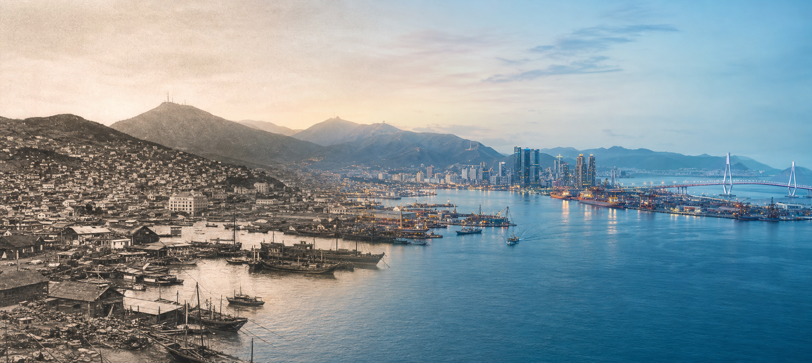

관광 자원 탐색
지역 고유의 장소와 이야기를 조사하고 핵심 매력을 구체적인 언어로 정리합니다.
관광 자원을 발견하고, 사람들의 시선이 머무는 콘텐츠로 발전시키는 모든 과정을 한곳에 모았습니다.

조사에서 콘텐츠 제작, 데이터 분석, 최종 프로젝트까지 단계별 결과물을 살펴보세요.
지역 고유의 장소와 이야기를 조사하고 핵심 매력을 구체적인 언어로 정리합니다.
조사한 인사이트를 카드뉴스와 영상 등 채널에 맞는 형태로 제작합니다.
콘텐츠 성과를 수치로 확인하고 다음 기획에 활용할 기준을 발견합니다.
771 LAYERS는 부산의 관광 자원과 사람의 경험을 관찰하고, 신뢰도 높은 기록과 창의적인 콘텐츠로 축적하는 아카이브 브랜드입니다.
CI 가이드 살펴보기 →